움직임 · 운용 · 앵글 · 렌즈 · 사이즈. 프롬프트로 카메라를 연출하는 기법 21종과 프레임 사이즈 9종을 예시 영상과 함께 정리했습니다.
내용 출처: AI 아스트라, 「AI 영화 제작 가이드」 (YouTube, 2026) · 예시는 Higgsfield로 직접 생성
오늘의 목표
카메라 결정을 움직임 · 운용 · 앵글 · 렌즈 · 사이즈로 나눠 설명할 수 있다.
기법 21종과 프레임 사이즈 9종을 장면의 목적에 맞게 고를 수 있다.
SCENE과 CAMERA 블록을 나눠 쓰고, 카메라만 바꿔 같은 장면을 다르게 찍을 수 있다.
AI 영상이 밋밋한 이유는 대부분 카메라
화질도 좋고 인물도 잘 나왔는데 영화 같지 않다면, 카메라가 가만히 있거나 천천히 앞으로 들어가기만 했기 때문입니다.
각성
카메라가 인물을 향해 밀고 들어가면
W01 · 영상 (재생 버튼을 누르세요)
상실
카메라가 인물에게서 물러나면
W02 · 영상 (재생 버튼을 누르세요)
같은 인물, 같은 장소, 같은 표정. 대사 한 줄 없이 카메라만으로 감정이 바뀝니다.
카메라 결정은 다섯 가지로 나눈다
MOVE
움직임
카메라가 어떻게 이동하나
9종
SUPPORT
운용 방식
카메라를 어떻게 들고 있나
3종
ANGLE
앵글과 위치
어디서, 어떤 높이로 보나
6종
LENS
렌즈와 초점
크기와 선명도를 어떻게 바꾸나
3종
SIZE
사이즈
인물을 어디서 자르나
9종
다섯 가지는 서로 독립적입니다. 하나씩 따로 정할수록 프롬프트가 정확해지고, 여기에 컷 길이를 더하면 한 컷의 설계가 끝납니다.
PART 01
카메라 프롬프트 쓰는 법
SCENE과 CAMERA, 두 블록으로 쓰기
프롬프트는 두 블록으로 쓴다
SCENE · 무엇이 일어나나
인물 · 장소 · 행동 · 빛. 한 번 쓰고 그대로 둔다.
She studies the photo, then slowly raises her eyes as she realizes something.
CAMERA · 어떻게 찍나
움직임 · 운용 · 앵글 · 렌즈 · 사이즈. 카드처럼 갈아 끼운다.
Slow dolly in toward her face, ending on a close-up.
CAMERA 블록은 한 문장이면 충분합니다. 결과가 원하는 대로 안 나올 때만 아래 네 요소로 자세히 씁니다.
결과가 어긋나면: CAMERA 블록 체크리스트 4요소
무브먼트 무엇을 하나
스피드 얼마나 빠르게
프레이밍 움직이는 동안 무엇을 유지하나
엔드 어디서 멈추나
가장 많이 빠뜨리는 것이 엔드입니다. 끝을 정하지 않으면 마지막 1초가 어정쩡하게 흘러갑니다.
Movement: dolly in (the camera moves, not a zoom)
Speed: slow and steady
Framing: face centered at eye level
End: stop on a close-up
같은 장면, CAMERA 블록만 바꾸면
SCENE · 고정
She studies the photo, then slowly raises her eyes as she realizes something.
M01 · 영상 (재생 버튼을 누르세요)
달리 인 → 깨달음
CAMERA
Slow dolly in toward her face, ending on a close-up.
D02 · 영상 (재생 버튼을 누르세요)
크레인 업 → 고립, 여운
CAMERA
Crane straight up until she is small in the alley.
D03 · 영상 (재생 버튼을 누르세요)
핸드헬드 → 불안, 긴장
CAMERA
Handheld, small nervous shakes, staying close on her face.
세 영상은 같은 캐릭터 시트, 같은 SCENE, 같은 길이(7초)로 만들었고 CAMERA 블록만 다릅니다. 차례로 재생해 보고 각각 어떤 감정이 드는지 비교해 보세요.
CAMERA 블록의 두 가지 규칙
RULE 1
움직임은 하나만
여러 움직임을 섞으면 카메라가 갈 곳을 몰라 어정쩡하게 떨기만 합니다. 필요하면 컷을 나눕니다.
나쁨 · 돌면서 + 줌 인 + 위로 상승
좋음 · 천천히 달리 인, 클로즈업에서 멈춤
RULE 2
장비 대신 결과를 쓴다
장비 이름을 쓰면 장면 속 소품으로 등장할 수 있습니다. 아래 M02 예시에서는 삼각대가 화면에 나왔습니다.
나쁨 · locked on a tripod
좋음 · the camera does not move
PART 02
카메라 움직임 9종
카메라가 어떻게 이동하나
각 기법의 영상 아래 그림은 카메라가 어떻게 움직이는지 위(TOP VIEW) 또는 옆(SIDE VIEW)에서 본 것입니다. 그림 속 장비(레일, 달리, 크레인, 드론, 짐벌)는 실제 촬영에서 그 움직임을 만드는 방법이고, 프롬프트에는 장비 이름 대신 움직임의 결과를 씁니다(규칙 2).
M01 · 영상 (재생 버튼을 누르세요)
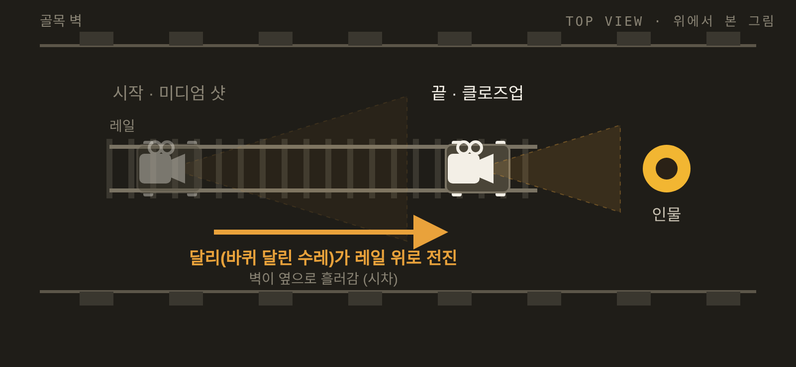
SCENE · 고정
She studies the photo, then slowly raises her eyes as she realizes something.
M01
달리 인 Dolly In
동작
카메라 자체가 인물 쪽으로 이동
용도
깨닫는 순간, 각성
CAMERA · 교체 가능
Slow dolly in toward her face, ending on a close-up.
실제 생성에 쓴 4요소 · 7초
Movement: dolly in, the camera itself moves forward toward her face (not a zoom)
Speed: slow and steady
Framing: face centered; the alley walls pass by with natural parallax
End: stop on a close-up of her face
M10 · 영상 (재생 버튼을 누르세요)
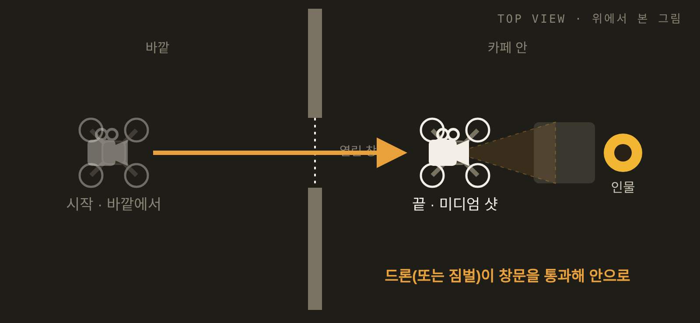
SCENE · 고정
A person in a yellow raincoat sits at the window table and turns a page of a photo album.
M10
푸시 스루 Push Through
동작
문이나 창을 통과해 다른 공간으로
용도
편집 없이 카메라로 장면 전환
CAMERA · 교체 가능
Push through the café window into the room, ending on a medium shot of her.
실제 생성에 쓴 4요소 · 6초
Movement: push through, the camera glides forward through the open café window
Speed: steady, moderate
Framing: keep the window table centered as the frame slides out of view
End: stop on a medium shot of the table
M05 · 영상 (재생 버튼을 누르세요)
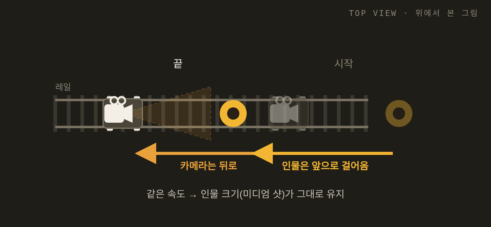
SCENE · 고정
She walks and talks, smiling, then stops and looks to the side.
M05
리버스 트래킹 Reverse Tracking
동작
인물 앞에서 뒤로 물러나며 촬영
용도
걸으면서 대사하는 신
CAMERA · 교체 가능
Track backward in front of her at walking pace, holding a medium shot.
실제 생성에 쓴 4요소 · 7초
Movement: reverse tracking, the camera moves backward in front of her
Speed: matches her walking pace
Framing: keep a steady medium shot of her face and upper body
End: stop when she stops walking
M04 · 영상 (재생 버튼을 누르세요)
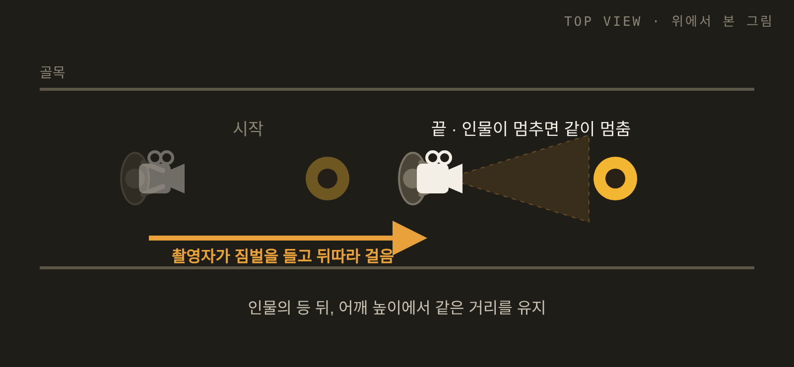
SCENE · 고정
She hurries up the alley, then stops at the corner.
M04
팔로 샷 Follow Shot
동작
인물 뒤를 어깨 높이로 따라감
용도
이동·추격 신, 몰입이 가장 높음
CAMERA · 교체 가능
Follow behind her at shoulder height, stopping when she stops.
실제 생성에 쓴 4요소 · 6초
Movement: follow shot, the camera moves behind her at shoulder height
Speed: matches her brisk walking pace
Framing: keep her back centered in a medium shot
End: stop when she pauses at the bend of the alley
S03 · 영상 (재생 버튼을 누르세요)
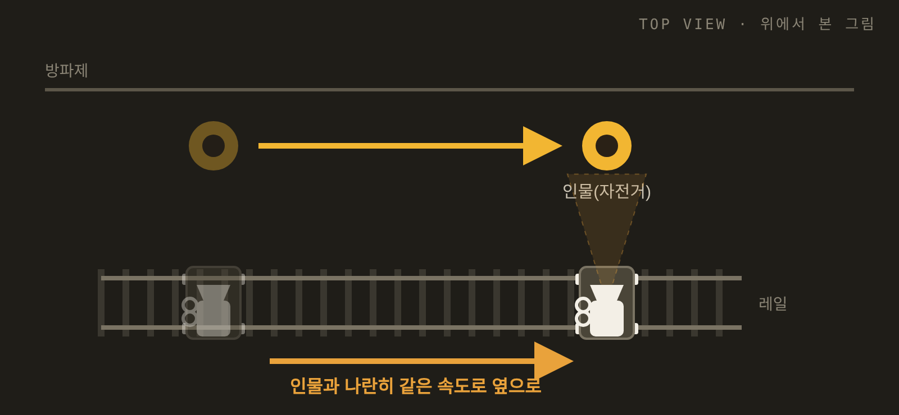
SCENE · 고정
She rides along the seawall, then slows and stops.
S03
사이드 트래킹 Side Tracking
동작
인물 옆에서 나란히 평행 이동
용도
이동의 리듬
CAMERA · 교체 가능
Track sideways alongside her, keeping her in profile.
실제 생성에 쓴 4요소 · 7초
Movement: side tracking, the camera moves sideways parallel to her
Speed: matches her cycling speed
Framing: side profile; foreground posts pass quickly, the boats slowly
End: stop when she slows and puts a foot down
M03 · 영상 (재생 버튼을 누르세요)
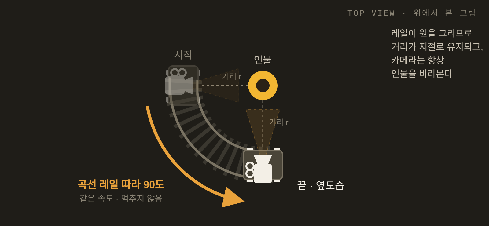
SCENE · 고정
A traveler in a yellow raincoat stands at the top of the stone stairs, looking out over the village.
M03
아크 샷 Arc Shot
동작
인물 주위를 곡선으로 돈다
용도
첫 등장, 공간을 한 번에 설명
CAMERA · 교체 가능
Smooth continuous arc around her at eye level, keeping the same distance.
처음 시도한 4요소 · 180도 (생성 필터에 걸려 실패)
Movement: arc shot, the camera circles around her in a 180-degree curve
Speed: smooth, moderate
Framing: keep her centered while the village and harbor are revealed
End: stop in front of her with the harbor behind
실패 사례 · 시간이 남으면 AI는 동작을 지어낸다
위 영상은 Slow arc 90 degrees around her at eye level, ending on her side profile with the harbor behind.를 8초로 만든 결과입니다.
무엇이 일어났나 · 회전 → 멈춤 → 인물 쪽으로 다가감 → 다시 회전
왜 · 90도 회전에 8초는 깁니다. 남는 시간을 AI가 다른 움직임으로 채웠습니다.
고치려면 · ① 길이를 동작에 맞게 4–5초로 ② CAMERA에 조건 추가: constant speed, same distance, no pause
영상을 다시 보면서 어디서부터 이상해지는지 찾아보세요.
M07 · 영상 (재생 버튼을 누르세요)
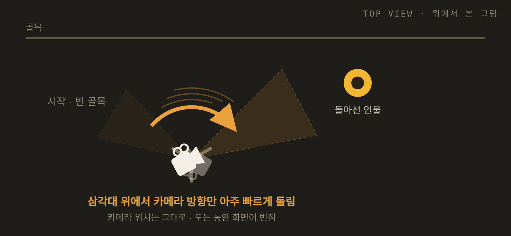
SCENE · 고정
A sudden sound; she spins around to face it.
M07
휩 팬 Whip Pan
동작
빠르게 휘둘러 잔상을 남김
용도
컷 전환, 타격감
CAMERA · 교체 가능
Whip pan fast to the right, landing sharply on her.
실제 생성에 쓴 4요소 · 4초
Movement: whip pan to the right
Speed: very fast, with heavy motion blur
Framing: start on the empty alley, land on her in a medium shot
End: stop sharply on her as she turns around
M08 · 영상 (재생 버튼을 누르세요)
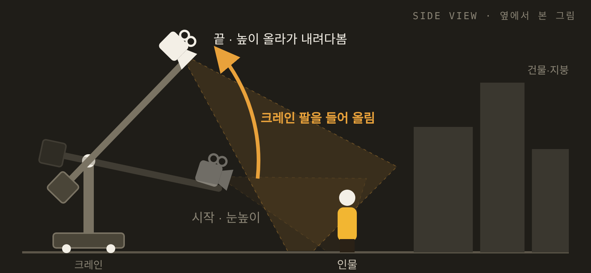
SCENE · 고정
She stands still in the plaza as the evening light fades.
M08
크레인 업 Crane Up
동작
수직으로 솟구치며 인물이 작아짐
용도
신을 닫는 엔딩
CAMERA · 교체 가능
Crane straight up until she is small below the rooftops.
실제 생성에 쓴 4요소 · 8초
Movement: crane up, the camera rises straight up
Speed: slow and smooth
Framing: keep her in the lower center as she grows smaller
End: stop high above the rooftops
S05 · 영상 (재생 버튼을 누르세요)
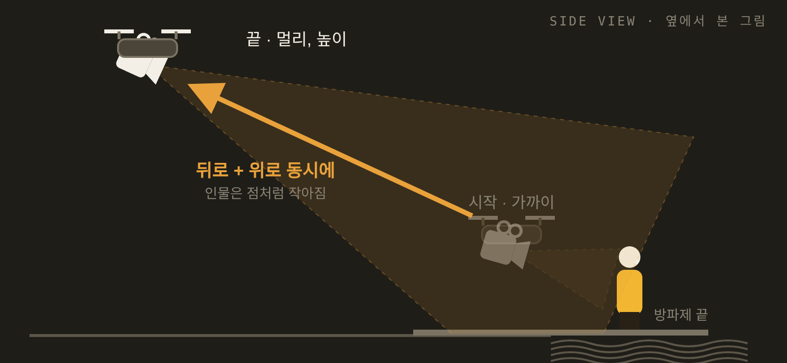
SCENE · 고정
She stands still at the end of the pier as the sun sets.
S05
드론 풀백 Drone Pullback
동작
뒤로, 위로 동시에 빠짐
용도
규모 표현, 엔딩 컷의 정석
CAMERA · 교체 가능
Drone pullback, flying backward and upward until she is a tiny dot.
실제 생성에 쓴 4요소 · 10초 롱테이크
Movement: drone pullback, the camera flies backward and upward at the same time
Speed: slow and smooth
Framing: keep her in the center as the coastline is revealed
End: her as a tiny yellow dot on the pier
PART 03
운용 방식 3종
카메라를 어떻게 들고 있나
A00 · 영상 (재생 버튼을 누르세요)
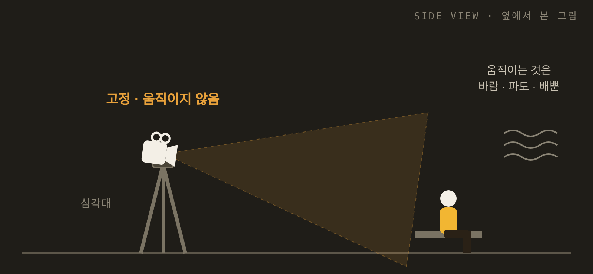
SCENE · 고정
She sits still; only the wind in her hair, the waves and the boats move.
A00
고정 · 정지샷 Static / Locked-off
동작
카메라를 전혀 움직이지 않음
용도
움직이지 않는 것도 하나의 선택
CAMERA · 교체 가능
Static locked-off shot; the frame never changes.
실제 생성에 쓴 4요소 · 6초
Movement: none, a static locked-off shot
Speed: none
Framing: keep the same symmetrical long shot
End: the frame never changes
M06 · 영상 (재생 버튼을 누르세요)
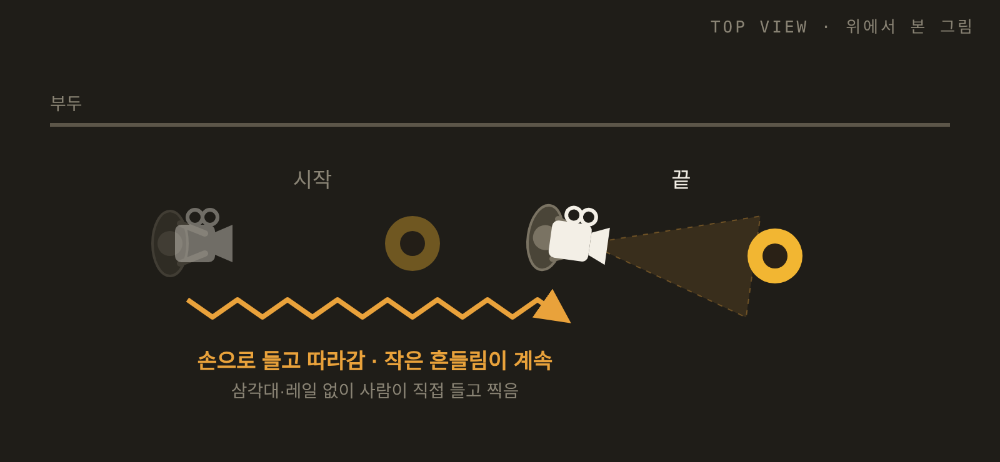
SCENE · 고정
She hurries along the dock, uneasy, and glances behind her.
M06
핸드헬드 Handheld
동작
손으로 든 듯한 미세한 흔들림
용도
현장감·불안·다큐 느낌
CAMERA · 교체 가능
Handheld with small natural shakes, loosely following her face.
실제 생성에 쓴 4요소 · 6초
Movement: handheld, with small natural shakes and breathing
Speed: loose, reacting to her movement
Framing: roughly keep her face and shoulders in a medium close-up
End: settle on her face as she looks back
M09 · 영상 (재생 버튼을 누르세요)
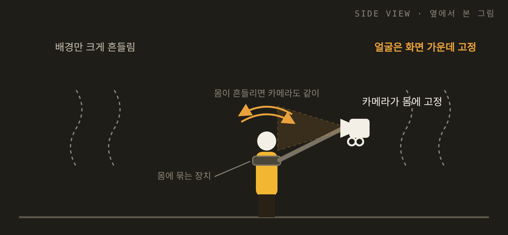
SCENE · 고정
She staggers through the alley in panic, then leans against a wall.
M09
스노리캠 Snorricam
동작
카메라를 몸에 고정, 배경만 흔들림
용도
정신이 무너지는 장면
CAMERA · 교체 가능
Snorricam: camera fixed to her body, her face locked in the center.
실제 생성에 쓴 4요소 · 6초
Movement: snorricam, the camera is mounted on her body
Speed: follows her unsteady movement
Framing: her face stays locked in the center; only the background sways
End: stop when she leans against a wall
PART 04
앵글과 위치 6종
어디서, 어떤 높이로 보나 · 기준은 눈높이(아이 레벨)
올려다보기와 내려다보기는 한 세트
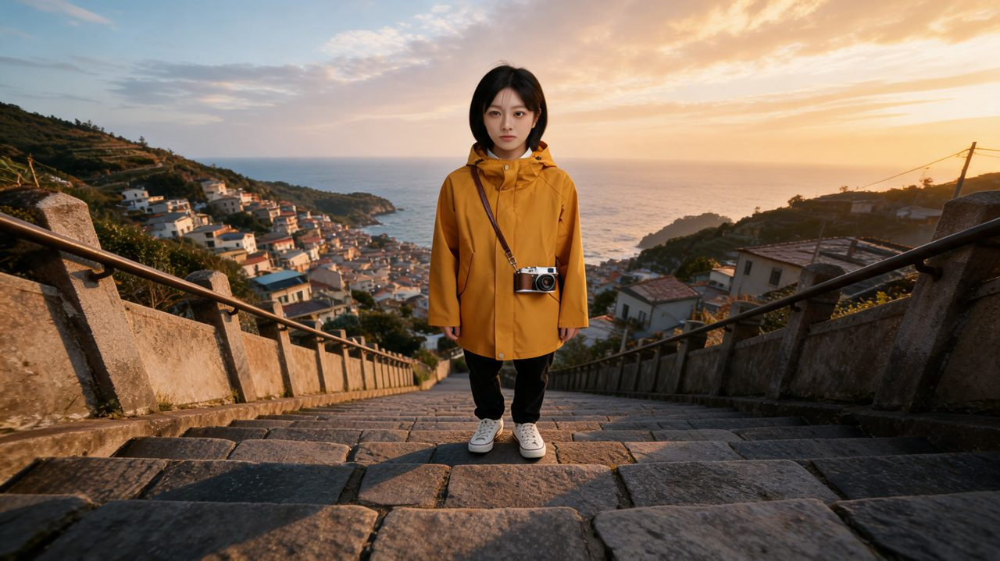
A02
로우 앵글 Low Angle
동작
지면 가까이서 올려다봄
용도
위압감, 영웅적인 인물
이미지 프롬프트
Low-angle shot with the camera close to the ground, looking up.
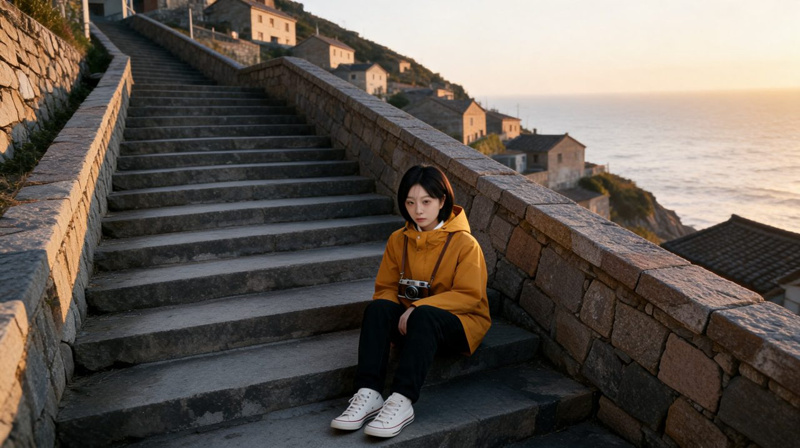
A03
하이 앵글 High Angle
동작
위에서 내려다봄
용도
무력함, 고립, 감시당하는 느낌
이미지 프롬프트
High-angle shot looking down at about 45 degrees; she sits small at the bottom of the stairs.
수직으로 내리꽂기, 기울이기
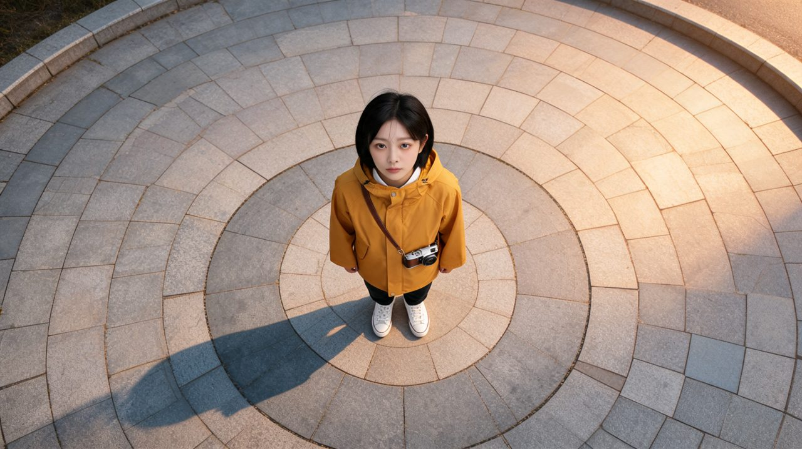
A04
오버헤드 Overhead
동작
정확히 수직 90도로 내려다봄
용도
상황 요약, 운명적인 시선
이미지 프롬프트
Overhead shot, exactly 90 degrees straight down; the scene looks flat, like a graphic pattern.
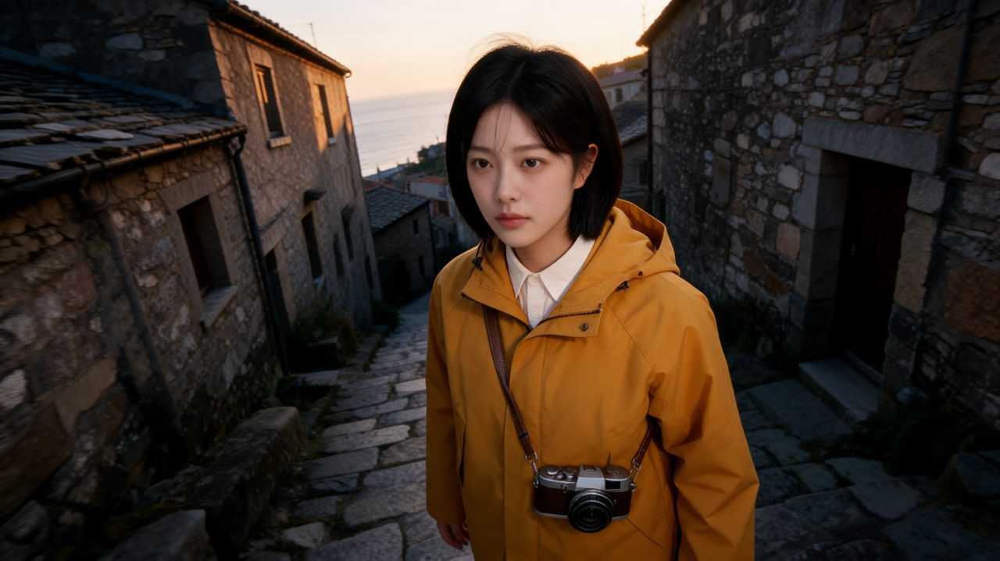
A05
더치 앵글 Dutch Angle
동작
수평선을 약 20도 기울임
용도
불안·왜곡, 길게 쓰면 피로감
이미지 프롬프트
Medium shot with the horizon tilted about 20 degrees (Dutch angle); she glances sideways, uneasy.
누구의 자리에서 보나
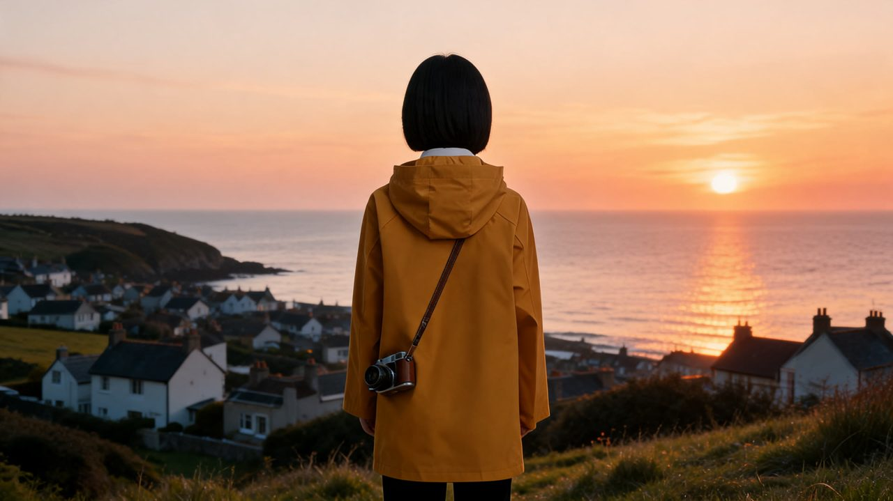
A01
리어 샷 Rear Shot
위치
인물 뒤에 고정, 뒷모습만 꽉 차게
용도
표정을 숨겨 관객이 감정을 상상
이미지 프롬프트
Medium shot from directly behind at shoulder height. Her back and the back of her head fill most of the frame; her face is not visible.
S04 · 영상 (재생 버튼을 누르세요)
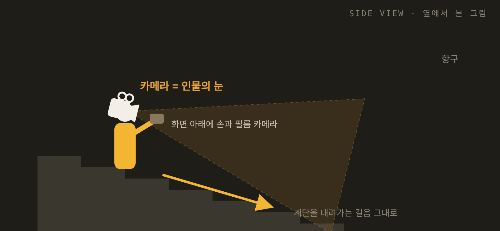
SCENE · 고정
Walking down the stairs, she lifts the film camera to take a photo of the harbor.
S04
1인칭 시점 POV
위치
인물의 눈 자리, 손만 화면 아래에
용도
관객을 인물 안에 집어넣기
CAMERA · 교체 가능
First-person POV at her eye level; only her hands visible.
실제 생성에 쓴 4요소 · 6초
Movement: first-person POV, walking down the stairs
Speed: natural walking pace with a gentle step bounce
Framing: keep both hands and the film camera at the bottom
End: stop as the hands raise the camera
PART 05
렌즈와 초점 3종
카메라는 그대로, 렌즈가 바꾸는 것
M02 · 영상 (재생 버튼을 누르세요)
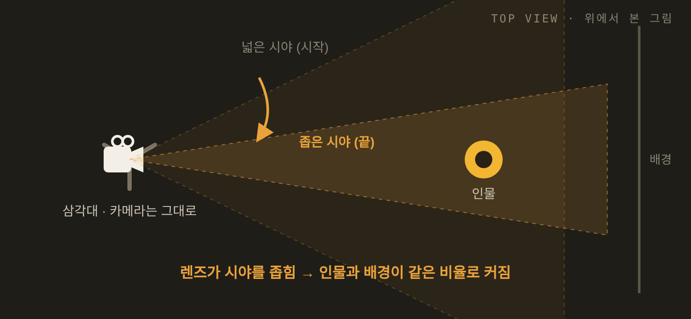
SCENE · 고정
She sits perfectly still, breathing tensely, eyes fixed on the sea.
M02
슬로 줌 인 Slow Zoom In
동작
카메라는 고정, 렌즈만 당김
용도
조용히 긴장 쌓기, 압박감
CAMERA · 교체 가능
Slow optical zoom in; the camera itself does not move.
실제 생성에 쓴 4요소 · 7초
Movement: slow optical zoom in; the camera body stays locked on a tripod
Speed: very slow, almost unnoticeable
Framing: keep her centered; the background flattens
End: stop on a medium close-up of her face
이 영상에는 프롬프트의 tripod 때문에 삼각대가 화면에 등장합니다. 규칙 2(장비 대신 결과를 쓴다)의 실제 예입니다.
달리 인과 줌 인은 배경이 다르다
달리 인
줌 인
움직이는 것
카메라 몸체
렌즈만
배경
앞뒤가 서로 다른 속도로 흐름
화면 전체가 같은 비율로 커짐
공간감
공간이 열린다
배경이 인물 뒤로 눌러 붙는다
느낌
공간을 통과해 다가감
조용한 압박, 긴장
프롬프트에는 the camera moves forward (not a zoom)처럼 둘을 구분해서 적습니다. 위의 M01과 M02를 이어서 재생해 비교해 보세요.
S01 · 영상 (재생 버튼을 누르세요)
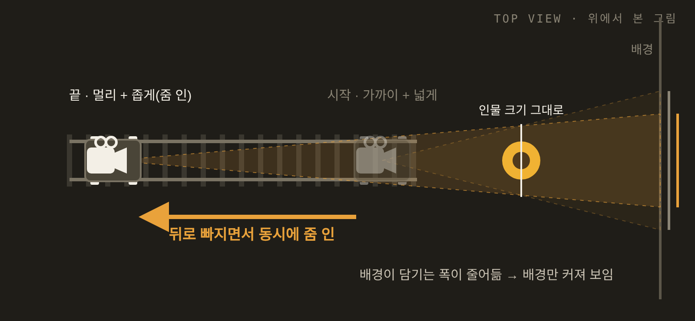
SCENE · 고정
She freezes in shock, as if the ground is falling away beneath her.
S01
돌리 줌 Dolly Zoom
동작
뒤로 빠지며 줌 인, 배경만 늘어남
용도
충격, 발밑이 꺼지는 순간
CAMERA · 교체 가능
Dolly zoom: move back while zooming in; her face stays the same size.
실제 생성에 쓴 4요소 · 5초
Movement: dolly zoom, dolly backward while the lens zooms in
Speed: slow and steady
Framing: her face stays exactly the same size; only the background warps
End: stop when the background is fully stretched
S02 · 영상 (재생 버튼을 누르세요)
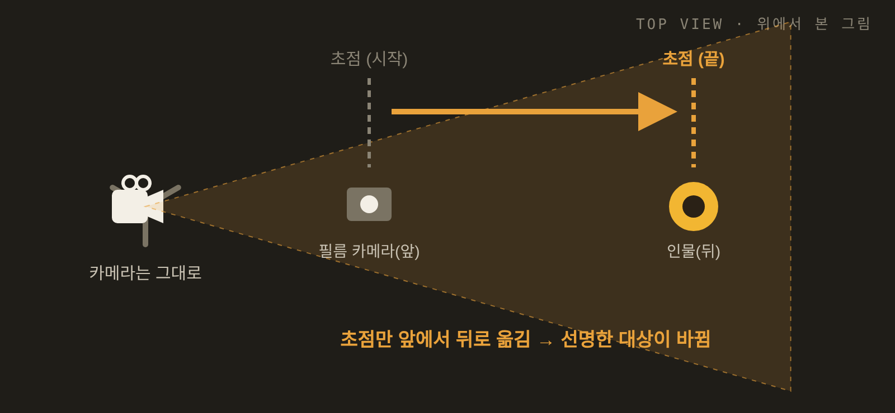
SCENE · 고정
She steps in through the door and notices the film camera on the table.
S02
랙 포커스 Rack Focus
동작
카메라는 그대로, 초점만 앞→뒤
용도
시선 강제 이동, 숨은 정보 공개
CAMERA · 교체 가능
Rack focus from the object in front to her face; no camera move.
실제 생성에 쓴 4요소 · 5초
Movement: rack focus only; the camera does not move at all
Speed: one smooth focus pull over about two seconds
Framing: the film camera in front, her at the door
End: her face sharp, the film camera blurred
21가지 기법, 무엇을 정하는가로 나누면
분류
정하는 것
기법
움직임 9
카메라의 이동
달리 인 · 푸시 스루 · 리버스 트래킹 · 팔로 · 사이드 트래킹 · 아크 · 휩 팬 · 크레인 업 · 드론 풀백
운용 방식 3
카메라를 드는 방법
고정(정지샷) · 핸드헬드 · 스노리캠
앵글 4
보는 높이와 기울기
로우 · 하이 · 오버헤드 · 더치 (기준은 아이 레벨)
위치·시점 2
누구의 자리에서 보나
리어 샷 · 1인칭 시점
렌즈·초점 3
크기와 선명도
줌 인 · 랙 포커스 · 돌리 줌(이동 + 줌)
원본 영상은 접근 · 회전과 이동 · 높이 · 시점 · 왜곡과 초점의 5묶음으로 나눴습니다. 기억하기 쉬운 실전 분류이고, 위 표는 촬영 용어 기준의 분류입니다.
PART 06
프레임 사이즈 9종
인물을 어디서 자르나
기준은 하나, 인물의 어디서 자르나
ID
사이즈
자르는 위치
주로 쓰는 때
F01
익스트림 롱샷
인물이 점처럼 작게
공간이 주인공, 오프닝·엔딩
F02
롱샷
전신 + 위아래 여백
장소 설명(설정 샷)
F03
풀샷
머리끝~발끝 딱 맞게
의상·동작 전체, 액션
F04
미디엄 풀샷
무릎 아래
두 사람 대화
F05
미디엄 샷
허리
대화의 기본
F06
미디엄 클로즈업
가슴 중간
뉴스·인터뷰
F07
클로즈업
머리와 어깨
감정 전달의 주력
F08
빅 클로즈업
이마~턱(정수리 잘림)
감정의 정점
F09
익스트림 클로즈업
눈만
디테일, 긴장의 정점
F01
익스트림 롱샷 ELS
자르기
인물이 점처럼 작게
용도
공간이 주인공, 오프닝·엔딩
이미지 프롬프트
Extreme long shot from far away on the opposite hillside: the whole bay and village fill the frame; she is a tiny yellow figure in the lower third.
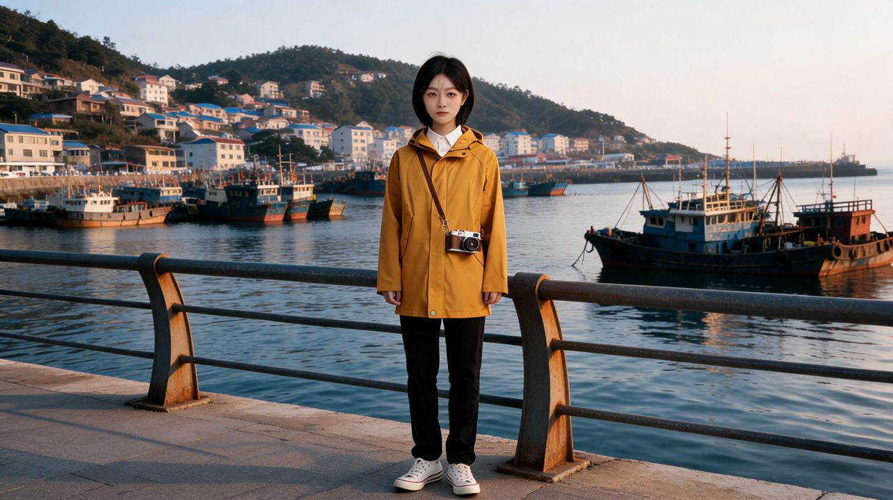
F02
롱샷 Long Shot
자르기
전신, 화면 높이의 1/3 정도
용도
여기가 어디인지 설명(설정 샷)
이미지 프롬프트
Long shot (establishing shot): her full body takes up only about one third of the frame height; the promenade and village fill the rest.
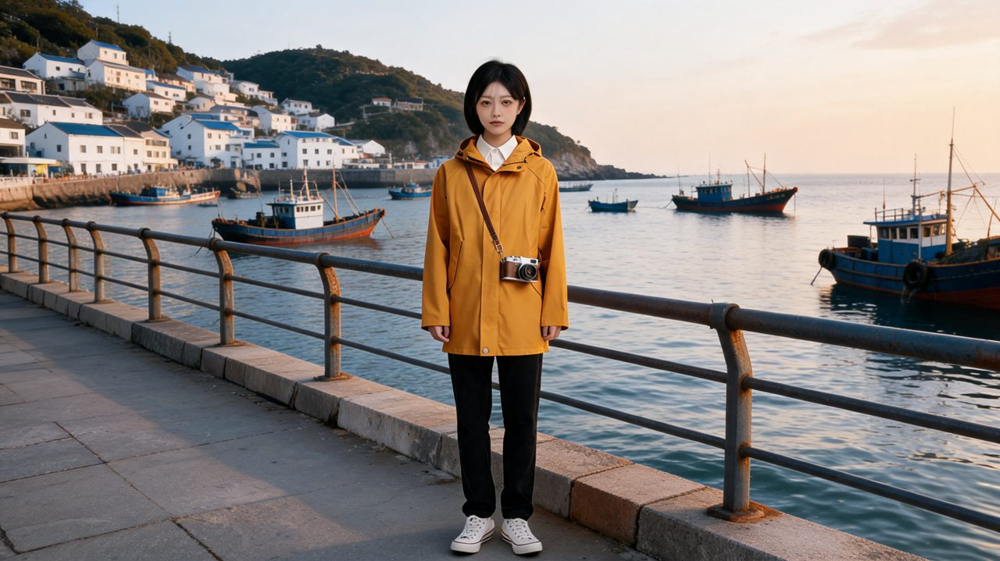
F03
풀샷 Full Shot
자르기
머리끝부터 발끝까지 딱 맞게
용도
의상·동작 전체, 액션의 시작
이미지 프롬프트
Full shot: from the top of her head to her feet, fitting the frame tightly.
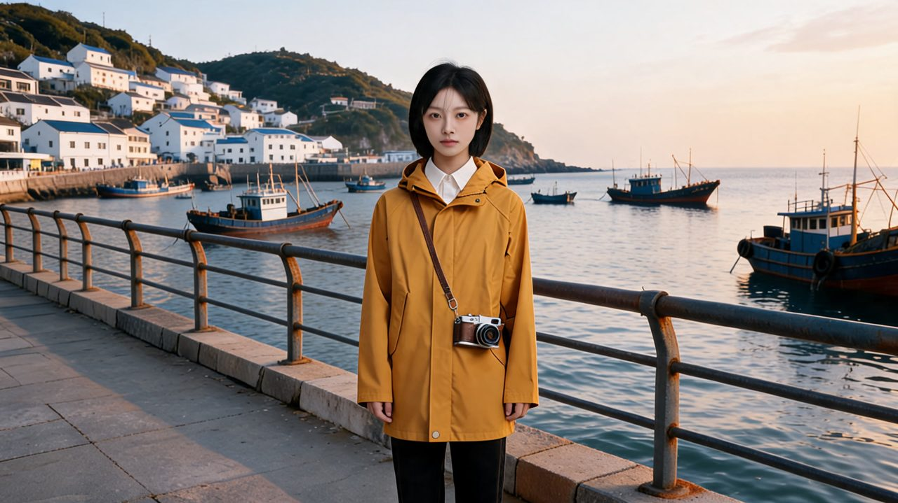
F04
미디엄 풀샷 Cowboy Shot
자르기
무릎 아래에서 자름
용도
두 사람이 대화하는 장면
이미지 프롬프트
Medium full shot (cowboy shot): framed from her head down to just below the knees.
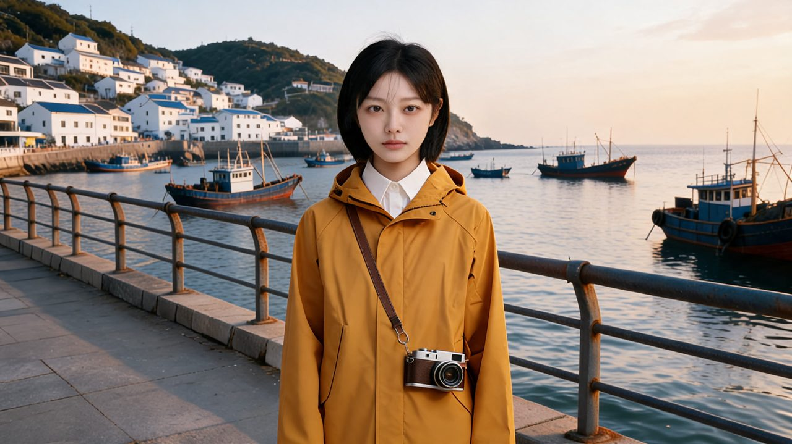
F05
미디엄 샷 Medium Shot
자르기
허리에서 자름
용도
대화의 기본, 고민되면 여기서 시작
이미지 프롬프트
Medium shot: framed from her head down to the waist.
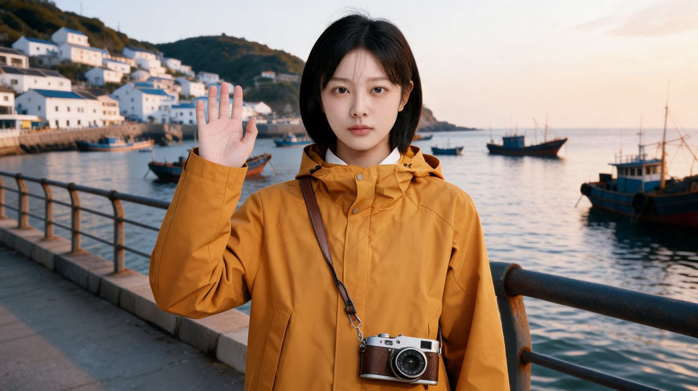
F06
미디엄 클로즈업 MCU
자르기
가슴 중간에서 자름
용도
뉴스·인터뷰, 표정과 손짓을 함께
이미지 프롬프트
Medium close-up: head to the middle of the chest, one hand raised in a small gesture.
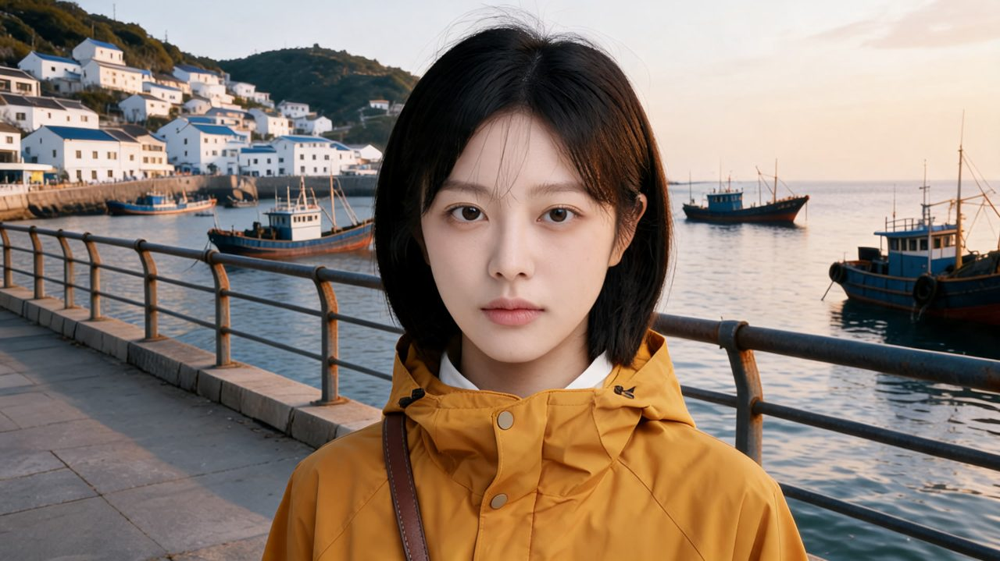
F07
클로즈업 Close-up
자르기
머리와 어깨만 남김
용도
감정을 전달하는 주력 샷
이미지 프롬프트
Close-up: only her head and shoulders fill the frame.
F08
빅 클로즈업 Big Close-up
자르기
이마부터 턱까지, 정수리 잘림
용도
감정이 최고조일 때
이미지 프롬프트
Big close-up: forehead to chin; the top of her head is cut off.
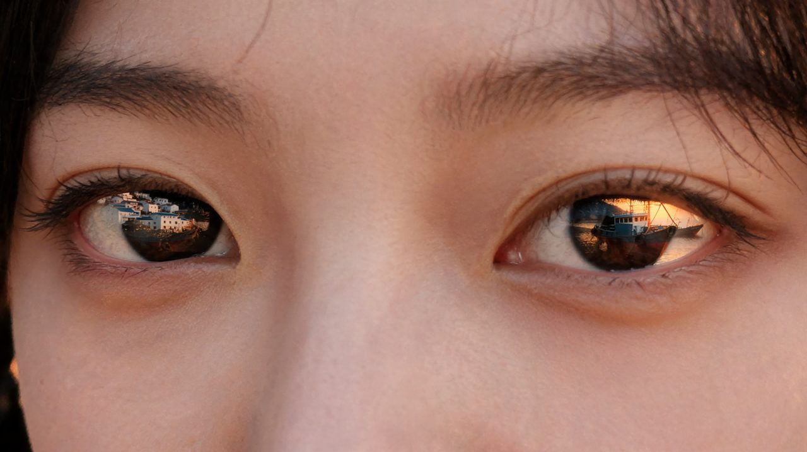
F09
익스트림 클로즈업 ECU
자르기
눈만 화면 가득
용도
디테일, 긴장의 정점
이미지 프롬프트
Extreme close-up: only her eyes fill the frame, with the harbor light reflected in them.
멀면 관객은 관찰자, 가까우면 당사자.
누가 몇 명, 어떤 관계로 들어가나
이름
화면에 담는 것
싱글
한 명
투샷 · 쓰리샷
두 명 · 세 명
오버 더 숄더
한 사람 어깨 너머의 상대
인서트
손, 소품 같은 세부
컷어웨이
주 장면 밖의 다른 것
리액션
듣는 쪽의 반응
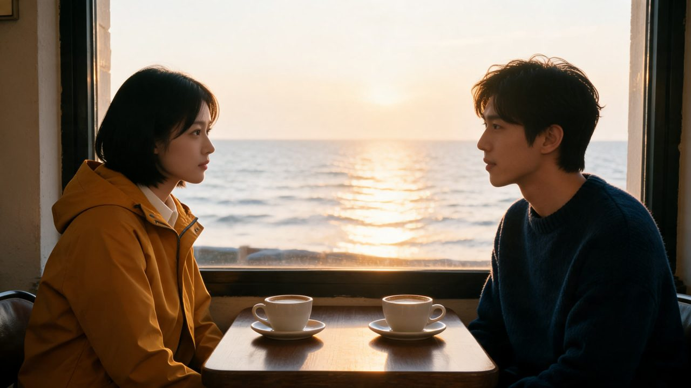
R01 · 투샷R02 · 오버 더 숄더
PART 07
실전 워크플로
캐릭터 시트, 컷 길이, 작업 순서
캐릭터 시트는 세 패널이면 충분하다
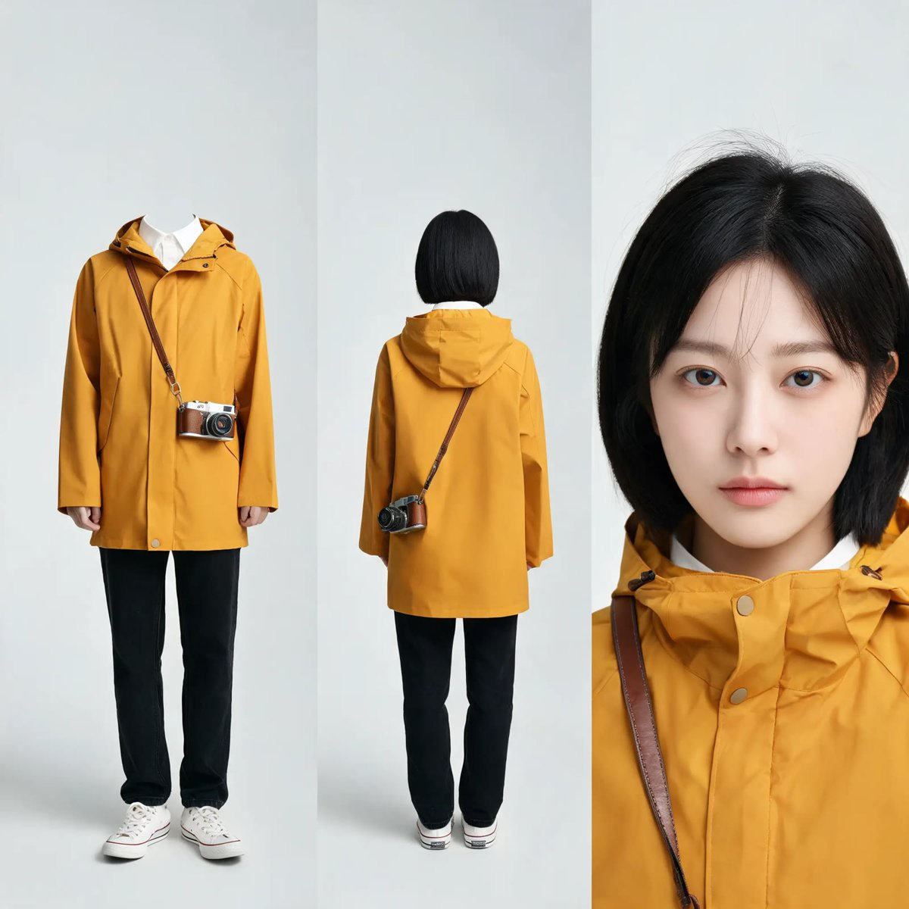
C00 · 캐릭터 시트
전신 정면, 머리 없이 (마네킹)
전신 후면
얼굴 클로즈업
얼굴 정보는 ③이 담당하니 ①에 넣을 이유가 없습니다.
시트에 인물 그림이 많을수록 같은 얼굴이 여러 명 생기기 쉽습니다.
이 페이지의 예시 영상은 대부분 이 시트 한 장을 레퍼런스로 만들었습니다.
15초, 30초를 통으로 뽑지 않는다
AI는 주어진 시간을 채운다
7초 분량을 30초로 뽑으면 나머지 23초는 AI가 지어냅니다. 위 아크 샷 실패 사례가 그 예입니다.
영화 문법은 짧다
상업 영화의 컷은 대체로 3~5초 안에 바뀝니다.
수정 비용이 줄어든다
실패하면 30초 전체 대신 7초짜리 하나만 다시 뽑습니다.
컷의 목적
길이
사물·인서트
3–4초
이동·액션
5–7초
설정 샷
5–8초
감정·대사
7–10초
롱테이크
10초 이상 · 무브먼트는 반드시 하나만
한 편을 만드는 다섯 단계
캐릭터 시트3패널로 만든다
SCENE 블록한 번 쓰고 고정
CAMERA 블록카드에서 골라 교체
컷 길이컷의 목적에 맞게
편집타임라인에 순서대로
어렵게 느껴졌던 것은 실력이 아니라 순서를 몰랐기 때문입니다. 다만 가장 어려운 것은 여전히 무엇을 이야기할지입니다.
SUMMARY
카메라는 다섯 가지로, 프롬프트는 두 블록으로, 컷은 하나씩.
움직임 · 운용 · 앵글 · 렌즈 · 사이즈를 따로 정하고, 장면은 SCENE에 고정하고 CAMERA 블록만 갈아 끼우고, 한 컷에 움직임 하나와 목적에 맞는 길이를 준다.
부록 · 카메라 카드
SCENE 블록 아래에 그대로 붙여 쓰는 한 줄짜리 CAMERA 블록입니다. her, the window 같은 대상만 자기 장면에 맞게 바꾸세요. 움직임 카드는 한 컷에 하나만 고르고, 운용·앵글 카드와는 함께 써도 됩니다.
움직임 9
달리 인
Slow dolly in toward her face, ending on a close-up.
푸시 스루
Push through the window into the room, ending on a medium shot of her.
리버스 트래킹
Track backward in front of her at walking pace, holding a medium shot.
팔로
Follow behind her at shoulder height, stopping when she stops.
사이드 트래킹
Track sideways alongside her, keeping her in profile.
아크
Arc 180 degrees around her at eye level, ending in front of her.
휩 팬
Whip pan fast to the right, landing sharply on her.
크레인 업
Crane straight up until she is small below the rooftops.
드론 풀백
Drone pullback, flying backward and upward until she is a tiny dot.
운용 3 · 앵글 4 · 위치 2
고정
Static shot; the camera does not move and the frame never changes.
핸드헬드
Handheld with small natural shakes, loosely following her face.
스노리캠
Camera fixed to her body; her face locked in center, background swaying.
아이 레벨 (기준)
Eye-level shot.
로우 앵글
Low-angle shot from near the ground, looking up at her.
하이 앵글
High-angle shot looking down at her at about 45 degrees.
오버헤드
Overhead shot, exactly 90 degrees straight down.
더치 앵글
Dutch angle, horizon tilted about 20 degrees.
리어 샷
Rear shot from directly behind her; her face is not visible.
1인칭 시점
First-person POV at her eye level; only her hands visible.
렌즈 3
줌 인
Slow optical zoom in; the camera itself does not move.
랙 포커스
Rack focus from the object in front to her face; no camera move.
돌리 줌
Dolly zoom: move back while zooming in; her face stays the same size.
사이즈 9 · 다른 카드 뒤에 붙여 시작·끝 크기를 정할 때
예: Slow dolly in, from a medium shot to a close-up. 사이즈 이름만 쓰기보다 어디서 자르는지(무릎, 허리 등)를 함께 쓰면 정확도가 올라갑니다.